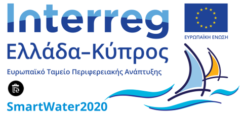

Πάζλ με τα Φράγματα της Κύπρου!
Πιο κάτω με κόκκινο χρώμα θα βρείτε 25 από τα φράγματα της Κύπρου. Στόχος σας είναι να σύρετε τα φράγματα
στη σωστή τους θέση. Εάν δεν την γνωρίζετε, κάντε διπλό κλικ και αφήστε τον υπολογιστή να το τοποθετήσει.
Κάντε refresh για να ξαναρχίσει το παιχνίδι.
Πηγές: Open Data Cyprus | Τμήμα υδάτων | http://www.bram.us/